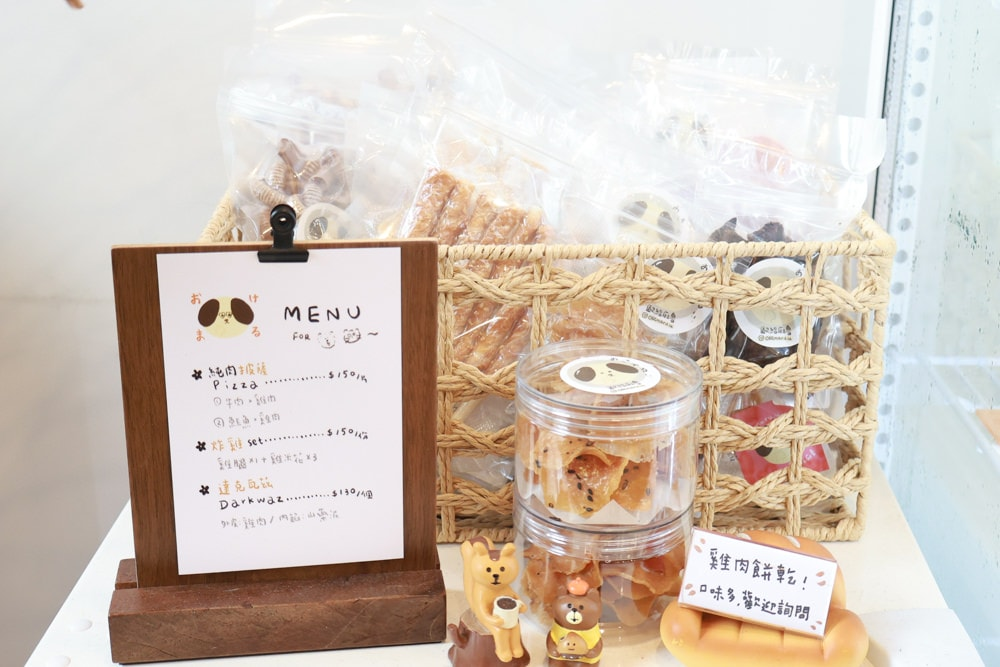
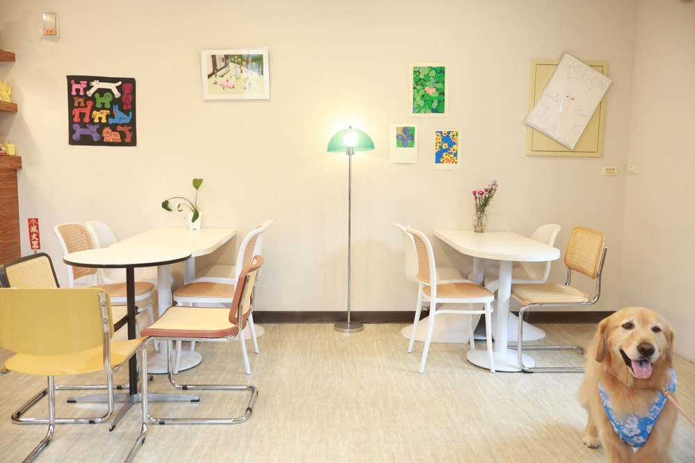
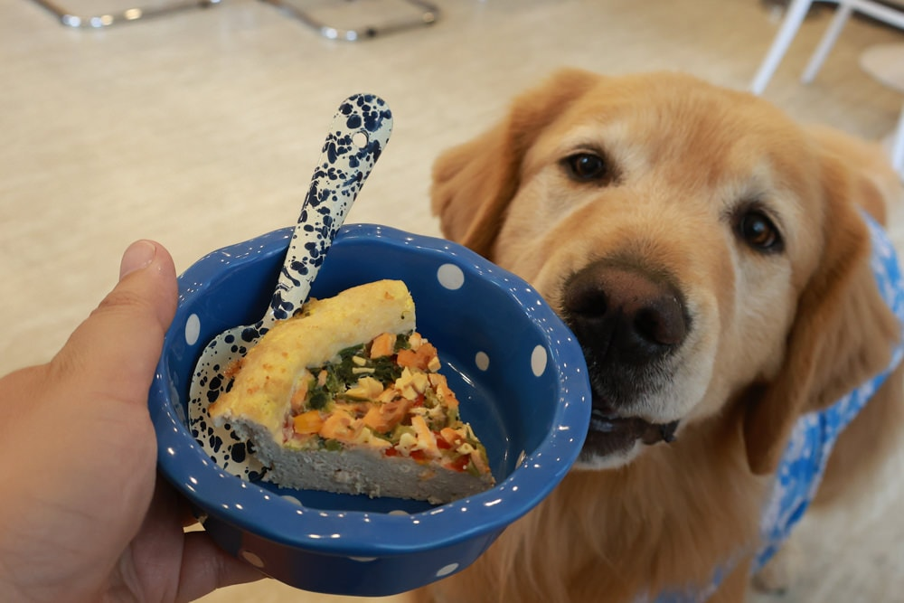
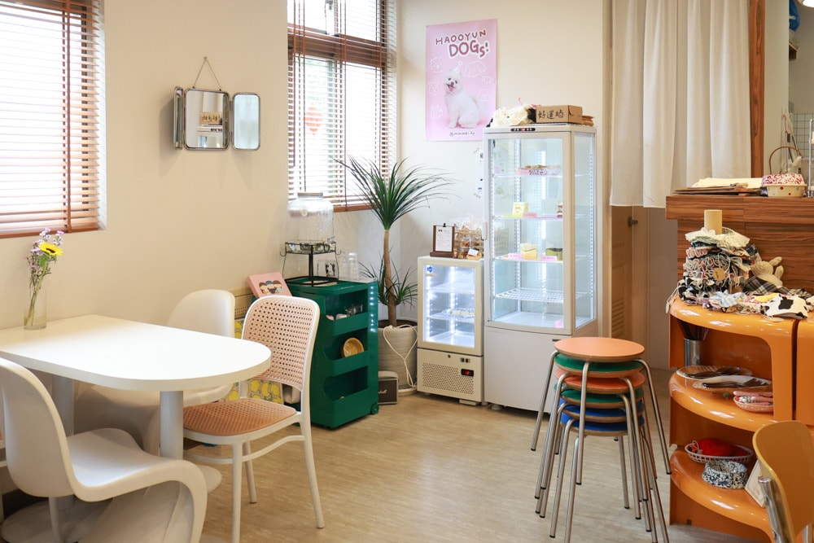
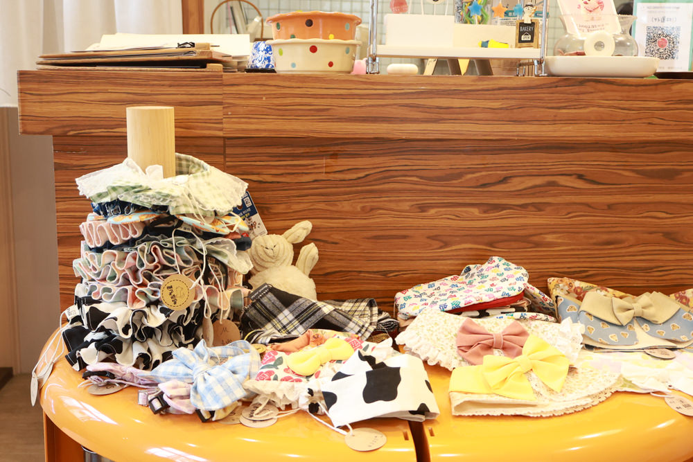

新しいペット用おやつが登場！

好運站の新着情報
新しいおやつと店内の最新情報をお届けします。

新しいペット用おやつが登場！

店内の装飾を新しくしました
ようこそ、好運站へ
好運站は、愛犬と一緒に立ち寄れるカフェです。新しいペット用おやつや、装飾を新たにした店内で、愛犬との楽しい時間をお過ごしください。

愛犬と一緒に、おいしいごはんを囲む楽しいひとときを。

愛犬と一緒にゆったり過ごせる、明るく落ち着いた空間です。

一つひとつ手作業で編んだ、愛犬にぴったりのあたたかなマフラーです。